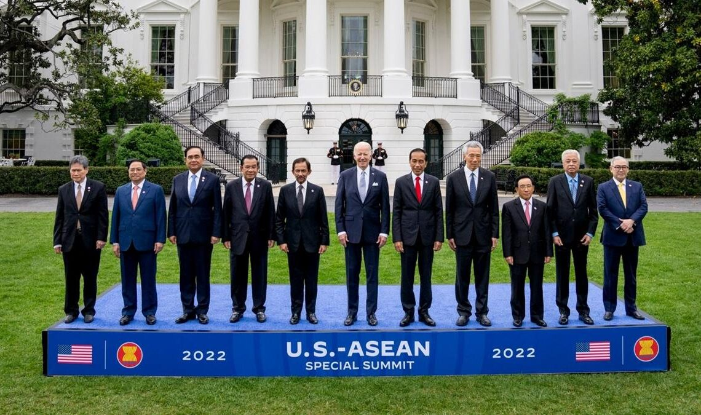

ASEAN (Perhimpunan Bangsa-Bangsa Asia Tenggara) didirikan pada 1967 dan terdiri dari 10 negara anggota: Brunei, Indonesia, Kamboja, Laos, Malaysia, Myanmar, Filipina, Singapura, Thailand, dan Vietnam. Tujuan ASEAN mencakup menjaga stabilitas kawasan, meningkatkan integrasi ekonomi, dan memperbaiki daya saing regional.
Kepemimpinan ASEAN bergilir tiap tahun, dan pada 2023, Indonesia kembali menjadi Ketua ASEAN. ASEAN juga membentuk kawasan perdagangan bebas, AFTA, yang mengurangi tarif bertahap, dimulai pada 1 Januari 2003. Sejak 2010, AFTA berlaku di ASEAN-6, dan negara-negara lainnya mendapat masa transisi hingga 2015. Meskipun tarif hampir sepenuhnya dihapus, penghapusan hambatan non-tarif masih berjalan lambat.

Tujuan Kerja Sama Regional ASEAN
Mempercepat pertumbuhan kemajuan sosial, ekonomi dan perkembangan budaya di kawasan Asia Tenggara.
Meningkatkan perdamaian dan stabilitas keamanan di kawasan Asia Tenggara.
Meningkatkan kerja sama serta saling membantu demi kepentingan bersama dalam bidang ekonomi, sosial, kebudayaan, administara serta IPTEK.
Menyelenggarakan usaha yang efektif guna mencapai hasil yang lebih baik dalam industri pertanian.
Mendirikan industri serta memperluas perdagangan, termasuk perdagangan internasional.
Menyediakan berbagai macam bantuan fasilitas untuk pelatihan dan penelitian bagi negara-negara anggota ASEAN.
Mengadakan pembahasan bersama tentang permasalahan yang terjadi pada kawasan Asia Tenggara pada khususnya dan wilayah Asia pada umumnya.
Contoh Kerja Sama ASEAN Dalam Bidang Ekonomi
ASEAN Free Trade Area (AFTA)
AFTA (ASEAN Free Trade Area) adalah kawasan perdagangan bebas yang dibentuk oleh negara-negara anggota ASEAN untuk mengurangi atau menghapuskan tarif dan hambatan perdagangan antar negara-negara ASEAN. Tujuan utama AFTA adalah untuk meningkatkan aliran perdagangan barang dan jasa antar negara anggota, sehingga mendorong pertumbuhan ekonomi di kawasan Asia Tenggara. AFTA dimulai pada 1 Januari 2003, dengan negara-negara ASEAN sepakat untuk mengurangi tarif impor barang dan mempercepat integrasi ekonomi regional. Selain tarif, AFTA juga berfokus pada penghapusan hambatan non-tarif, meskipun proses ini masih berlanjut. Keberadaan AFTA membantu memperkuat posisi ASEAN dalam pasar global dan meningkatkan daya saing regional.
AEC (ASEAN Economic Community)
AEC (ASEAN Economic Community) adalah inisiatif dari negara-negara ASEAN untuk menciptakan pasar tunggal dan basis produksi yang terintegrasi, dengan tujuan meningkatkan daya saing ekonomi kawasan ASEAN di tingkat global. AEC bertujuan untuk menghapuskan hambatan perdagangan, mempermudah aliran barang, jasa, investasi, tenaga kerja terampil, dan modal antar negara anggota. AEC, yang resmi diberlakukan pada 31 Desember 2015. Dengan AEC, diharapkan ASEAN menjadi lebih terintegrasi secara ekonomi, sehingga memperkuat posisi kawasan dalam perekonomian global.